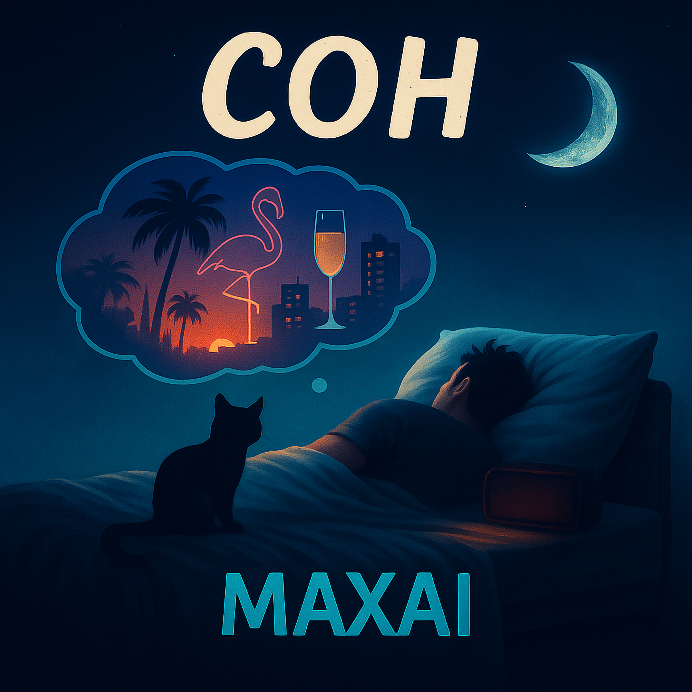

08.01.2026
В шляпе с полями
Она ела салями,
Губы в помаде
Цвет вишни в шоколаде.
Твой взгляд — тигрицы,
Мои нервы как спицы.
Летим в Майами
Выпить чая с блинами.
На песчаном пляжу
Я с красоткой лежу,
В телефон не гляжу,
С неё глаз не свожу.
Не свожу
Покидаем пляж,
Впереди нас ждёт кураж.
Костюм от Гуччи,
Разве может быть круче?!
Шампусик — рекой,
Я уже почти хмельной.
Твой взор — это жар,
Обжигает, как пожар.
На верхнем этаже
Мы почти в неглиже
Я прикинул уже
Ты скажешь: "Давай же!"
Давай же!
Села на кровать —
Но уверен, что не спать.
Рукой коснулся —
И я сразу проснулся.
Подушка в слюнях,
Весь замотан в простынях.
А вместо страсти,
Кот мурлычет мне: "Здрасти!".
Мне: "Здрасти!"
На пляжу не лежу —
На кровати сижу,
В телефон свой гляжу —
И будильник глушу.
До прослушивания: Лёгкость, ожидание приключения, курортная фантазия.
После прослушивания: Улыбка и самоирония: сладкий сон сменяется бытовой правдой, но настроение остаётся тёплым.
«Сон» — комедийный контраст мечты и реальности. Глянцевые картинки, роскошь и страсть растворяются утренним будильником и котом. Идея: мечтать — нормально, главное уметь улыбнуться, когда будит жизнь.
Последовательные куплеты-зарисовки с нарастающей фантазией героя, затем резкий «срыв» в реальность (проснулся) и короткий бытовой финал-рефрен.
Мужской голос с лёгкой хулиганской интонацией и юмором. Подача разговорная, без пафоса — как рассказ приятеля о ярком сне, который смешно закончился.